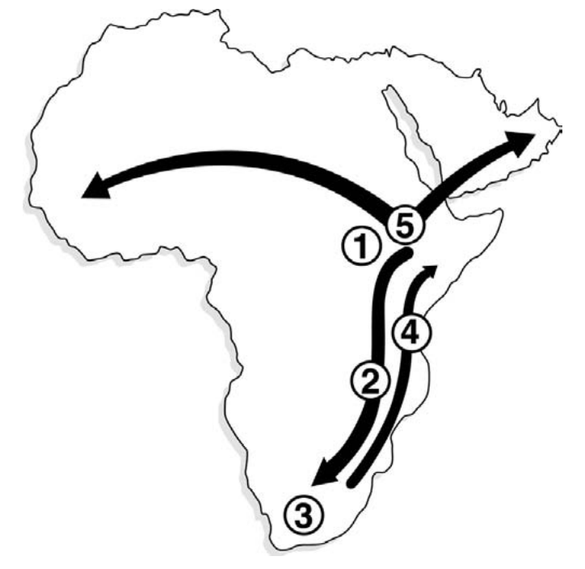

Chương 5 — Sự tiến hóa của tâm trí dopamine
5 Sự tiến hóa của tâm trí dopaminergic
Theo thông lệ, dù có phần hạn chế, người ta thường nhìn nhận sự tiến hóa của não bộ con người theo các sự kiện dẫn đến sự xuất hiện của con người hiện đại về mặt di truyền và giải phẫu, hiện được cho là vào khoảng 200.000 năm trước. Mọi thay đổi tiếp theo ở con người đều được quy cho tác động của “văn hóa”, và “lịch sử” loài người bị đẩy xuống thành những sự kiện hiện đại hơn nữa bắt đầu từ khi hình thành các xã hội nông nghiệp. Tuy nhiên, nếu sự mở rộng của dopamine không chủ yếu do những thay đổi qua trung gian di truyền trong giải phẫu thần kinh của chúng ta mà do những thay đổi biểu sinh (epigenetic) trong hóa học thần kinh của chúng ta, thì sự tiến hóa vật lý của não bộ con người hiện đại đã tiếp tục cho đến tận ngày nay. Chương này sẽ tập trung vào sự tiến hóa của tâm trí dopaminergic dẫn đến, và bao gồm cả, cuộc bùng nổ văn hóa ở Homo sapiens vốn được gọi là “Vụ Nổ Lớn” (Big Bang) (Mithen, 1996), xảy ra đầu tiên ở Nam Phi vào khoảng 70.000 đến 80.000 năm trước và sau đó xuất hiện ở châu Âu khoảng 40.000–50.000 năm trước, trong khi Chương 6 sẽ tập trung vào những thay đổi của tâm trí dopaminergic kể từ buổi bình minh của lịch sử. Tôi sẽ làm nổi bật hai sự kiện lớn trong quá trình tiến hóa của loài người – sự tiến hóa của tâm trí “tiền-dopaminergic” (protodopaminergic) bắt đầu từ khoảng hai triệu năm trước và sự trỗi dậy của tâm trí dopaminergic giai đoạn sau với những năng lực trí tuệ đặc trưng của con người cách đây chưa đầy 100.000 năm. Tuy nhiên, trước tiên, cần phải mô tả thêm về sự đóng góp của các ảnh hưởng biểu sinh đối với tính di truyền, xét đến vai trò thiết yếu mà chúng dường như đã đóng góp trong quá trình tiến hóa trí tuệ của chúng ta.
5.1 Tầm quan trọng của di truyền biểu sinh
Như đã thảo luận trong Chương 1, có những lý do vững chắc để tin rằng sự tiến hóa của trí thông minh con người không phụ thuộc vào những thay đổi về kích thước não hay những thay đổi trong bộ gen, ít nhất là ở các giai đoạn sau, mà đúng hơn là vào sự mở rộng của các hệ thống dopaminergic trong não. Vậy điều gì đã gây ra sự mở rộng dopaminergic dẫn đến tâm trí con người hiện đại? Như đã đề cập sơ qua trong Chương 1 và được trình bày chi tiết trong một lý thuyết trước đó (Previc, 1999), sự tiến hóa của tâm trí dopaminergic phụ thuộc vào các ảnh hưởng sinh lý và những thay đổi trong chế độ ăn uống, vốn cùng nhau dẫn đến sự gia tăng dopamine trong não. Trong khi bộ gen từng được cho là quyết định gần như độc quyền tính di truyền của chúng ta, thì ngày nay người ta thừa nhận rộng rãi rằng các ảnh hưởng biểu sinh, đặc biệt là những ảnh hưởng xảy ra trong tử cung, tác động và đôi khi thậm chí lấn át sự biểu hiện gen ở mọi cấp độ và qua đó làm thay đổi sự phát triển của não bộ (Gottlieb, 1998; Harper, 2005; Keller, 2000; Lickliter và Honeycutt, 2003; Nathanielsz, 1999; Petronis, 2001). Môi trường của người mẹ ảnh hưởng đến chức năng miễn dịch, bệnh tim, tiểu đường và nguy cơ ung thư (Nathanielsz, 1999; Petronis, 2001) và thậm chí cả ngoại hình tổng thể trong một số trường hợp (Gottlieb, 1998); nhưng liên quan nhất đến luận điểm này, nó đã được chứng minh là có ảnh hưởng đặc biệt mạnh mẽ đến sự phát triển não bộ và hành vi, và thậm chí có thể được coi là một nguồn gốc của sự hình thành loài (Lickliter và Honeycutt, 2003). Điều cốt yếu xét từ góc độ tiến hóa não người là các tác động từ người mẹ có tính chất xuyên thế hệ, chẳng hạn như một người mẹ có nồng độ dopamine cao có thể truyền nồng độ đó cho con cái từ trước khi sinh và đến lượt chúng lại truyền cho con cái của chúng (Harper, 2005; Lickliter và Honeycutt, 2003; Nathanielsz, 1999). Ba trong số những ví dụ quan trọng nhất về ảnh hưởng biểu sinh đối với sự phát triển não bộ là tác động của tình trạng thiếu i-ốt trước khi sinh (Boyages và Halpern, 1993; DeLange, 2000), tác động của nồng độ phenylalanine và tyrosine được kiểm soát kém trong bệnh phenylketon niệu (Hanley và cộng sự, 1996), và tác động của nồng độ dopamine cao ở người mẹ đối với nguy cơ gia tăng chứng tự kỷ (Previc, 2007). Hội chứng thiếu i-ốt trước khi sinh có nhiều khả năng ảnh hưởng đến sự phát triển não bộ hơn là sự phát triển xương và ước tính đặt hơn một tỷ người trên toàn thế giới vào nguy cơ suy giảm trí thông minh (DeLange, 2000). Trong chứng tự kỷ và bệnh phenylketon niệu, nguy cơ từ người mẹ liên quan đến cả yếu tố di truyền và phi di truyền, nhưng ngay cả nguy cơ di truyền cũng biểu hiện một phần trong môi trường hóa học thần kinh bất thường trước khi sinh. Ví dụ, việc xóa bỏ cả hai alen của gen chịu trách nhiệm tạo ra enzyme dopamine beta-hydroxylase – enzyme chuyển hóa chất dẫn truyền thần kinh dopamine thành norepinephrine – về mặt lý thuyết sẽ tạo ra một cá thể không có norepinephrine và có nồng độ dopamine cao, điều này không chỉ làm rối loạn sức khỏe tâm thần (xem Chương 4) mà còn gây thảm họa về mặt sinh lý vì norepinephrine là chất dẫn truyền thần kinh chủ chốt duy trì cung lượng tim giao cảm bình thường. Tuy nhiên, ngay cả trong trường hợp này, nồng độ norepinephrine bình thường của người mẹ vẫn có thể khắc phục tình trạng thiếu norepinephrine của chính đứa con (Thomas và cộng sự, 1995), trong khi ngược lại, tỷ lệ dopamine trên norepinephrine cao bất thường ở người mẹ có thể tạo ra nồng độ dopamine quá mức ngay cả ở những đứa con có gen dopamine beta-hydroxylase bình thường (Robinson và cộng sự, 2001).
Các hệ thống dopaminergic ở người rất nhạy cảm với vô số ảnh hưởng trước khi sinh, dựa trên các tác động trực tiếp và gián tiếp lên nồng độ dopamine của người mẹ trong thai kỳ. Nhiều nghiên cứu đã chỉ ra rằng việc người mẹ nạp vào tyrosine (tiền chất của dopa và dopamine), cocaine (chất ức chế tái hấp thu dopamine), amphetamine (chất vừa kích thích giải phóng dopamine vừa ức chế tái hấp thu dopamine), và haloperidol (chất ức chế tác động của dopamine sau khi sinh) đều ảnh hưởng đến nồng độ dopamine sau sinh và nhiều hành vi qua trung gian dopamine ở con cái (ví dụ: Archer và Fredriksson, 1992; Santana và cộng sự, 1994; Zhang và cộng sự, 1996). Phát hiện chung từ những nghiên cứu này và các nghiên cứu khác là việc kích thích hệ thống dopamine của người mẹ trước khi sinh dẫn đến tăng cường hoạt động dopaminergic sau sinh (Santana và cộng sự, 1994), trong khi việc giảm hoạt động dopamine của người mẹ làm suy giảm hoạt động dopaminergic sau sinh (Zhang và cộng sự, 1996).
Như đã lưu ý trong Chương 4, tầm quan trọng của môi trường trước khi sinh đối với sự phát triển não bộ thậm chí đã thách thức các giả định cơ bản của di truyền học hành vi. Người ta giả định rằng các cặp song sinh cùng trứng và khác trứng chia sẻ cùng một môi trường trước khi sinh và sự khác biệt về tỷ lệ tương đồng giữa chúng là do di truyền; trong khi đó, sự khác biệt về tỷ lệ tương đồng ở cặp song sinh khác trứng so với anh chị em ruột thông thường là do môi trường trước sinh và/hoặc sau sinh được chia sẻ nhiều hơn ở nhóm trước. Sử dụng các phương pháp này, ảnh hưởng di truyền được ước tính vào khoảng ~50 phần trăm trong trường hợp trí thông minh (Dickens và Flynn, 2001) và thậm chí còn cao hơn ở một số rối loạn tâm lý lớn như rối loạn tăng động giảm chú ý, tự kỷ, rối loạn lưỡng cực và tâm thần phân liệt. Tuy nhiên, trên thực tế, môi trường trước sinh và sau sinh của các cặp song sinh cùng trứng và khác trứng không hề giống hệt nhau và tầm quan trọng của việc dùng chung hợp tử có lẽ đã bị phóng đại quá mức (Mandler, 2001; Prescott và cộng sự, 1999).
Hiện vẫn chưa rõ chính xác bao nhiêu phần của sự mở rộng dopaminergic trong quá trình tiến hóa của họ người có thể quy cho các yếu tố biểu sinh so với bao nhiêu phần có thể quy cho các thích nghi di truyền. Nhưng những đợt gia tăng lớn gần đây ở nhiều quốc gia công nghiệp hóa về trí thông minh (Dickens và Flynn, 2001) và chứng tự kỷ (Previc, 2007) – hai hiện tượng gắn liền rõ rệt với dopamine, như đã thảo luận trong Chương 3 và 4 – cho thấy rằng những thay đổi trên quy mô toàn dân số về hoạt động dopaminergic có thể xảy ra và đã xảy ra mà không cần có sự thay đổi trong bộ gen. Trong phần còn lại của chương này, tôi sẽ đề xuất một tập hợp các kịch bản cung cấp lời giải thích hợp lý và toàn diện cho sự trỗi dậy của tâm trí dopaminergic. Những kịch bản này, vốn liên quan đến cả di truyền học và di truyền biểu sinh, sẽ được chia thành hai phần chính – sự tiến hóa của tâm trí tiền-dopaminergic từ vài triệu năm trước đến khoảng 200.000 năm trước, và sự tiến hóa của tâm trí dopaminergic giai đoạn sau dẫn đến cuộc “Vụ Nổ Lớn” văn hóa cách đây ~70.000–80.000 năm.
5.2 Sự tiến hóa của tâm trí tiền-dopaminergic
5.2.1 Các thích nghi môi trường tại “cái nôi của nhân loại”
Vào khoảng năm đến sáu triệu năm trước, những loài vượn người (hominid) đầu tiên – nhóm Australopithecine – bắt đầu xuất hiện ở châu Phi cận Sahara (Arsuaga, 2003; Coppens, 1996). Niên đại này đã được xác lập dựa trên cả bằng chứng hóa thạch lẫn bằng chứng DNA ty thể.1 Đã có một loạt các dòng dõi Australopithecine, trong đó chỉ có một loài (Australopithecus afarensis) được thừa nhận rộng rãi là đã dẫn trực tiếp đến loài người.
Sự phân nhánh giữa người và tinh tinh xảy ra trong vòng một đến hai triệu năm sau khi quá trình tách giãn đứt gãy tái hoạt động, điều cuối cùng đã khiến cao nguyên Đông Phi trở nên khô cằn hơn đáng kể so với rừng nhiệt đới Tây Phi (Arsuaga, 2003; Coppens, 1996). Bằng chứng hóa thạch hiện nay chứng minh một cách thuyết phục rằng các loài vượn người sơ khai bị giới hạn trong một môi trường xavan trống trải, khô cằn, có thể bao quanh các con suối, hồ hoặc các nguồn nước khác (Brunet và cộng sự, 1995). Australopithecus rõ ràng đã đi bằng hai chân, mặc dù vẫn giữ lại các khả năng sống trên cây (Arsuaga, 2003; Coppens, 1996). Việc đi bằng hai chân cho phép các loài vượn người sơ khai khai thác môi trường xavan trống trải ở mức độ lớn hơn nhiều so với các loài vượn lớn nhờ sự di chuyển dễ dàng hơn (Carrier, 1984) và vì tư thế đứng thẳng hai chân ít hấp thụ nhiệt mặt trời hơn nhiều (Wheeler, 1985). Đến lượt mình, việc khai thác mạnh mẽ hơn hốc sinh thái xavan đã dẫn đến sự phụ thuộc ít hơn vào chế độ ăn trái cây so với loài tinh tinh sống trong rừng (Grine và Kay, 1988).2 Các thích nghi khác với môi trường nhiệt, sẽ được thảo luận ngay sau đây, cũng góp phần bổ sung vào lợi thế của các loài vượn người sơ khai so với vượn lớn ở các vùng xavan ngày càng khô cằn của Đông Phi, một lợi thế được chứng thực bởi sự vắng mặt của bất kỳ di cốt hóa thạch vượn lớn nào nằm lẫn trong các địa điểm của vượn người sơ khai (Brunet và cộng sự, 1995; Coppens, 1996).
Bất chấp việc đi bằng hai chân, các loài australopithecine là những sinh vật có vóc dáng thấp bé với bộ não không lớn hơn não của tinh tinh. Sự phân nhánh tiếp tục của các loài australopithecine mảnh khảnh (Australopithecus
1 DNA ty thể trong tế bào, không giống như DNA thông thường nằm trong nhân tế bào, chỉ được truyền qua người mẹ. Dựa trên tốc độ đột biến đã biết, những sai lệch có hệ thống trong DNA giữa các cá thể và các loài có thể cung cấp những ước tính khá chính xác về tiến trình thời gian của quá trình tiến hóa sinh học (xem Cann và cộng sự, 1987). 2 Đáng lưu ý, như một bằng chứng cho năng lực vận động hạn chế của chúng, các loài vượn lớn hiện đại chỉ di chuyển tổng cộng khoảng nửa dặm mỗi ngày (Bortz, 1985).
afarenis) khỏi các loài australopithecine vạm vỡ được cho là cuối cùng đã dẫn đến sự xuất hiện của chi Homo vào khoảng 2–2,5 triệu năm trước ở Đông Phi (Arsuaga, 2003; Coppens, 1996; Falk, 1990). Homo habilis được cho là đại diện cho bước tiến lớn đầu tiên so với tinh tinh về kích thước não tương đối, với bộ não ước tính lớn hơn khoảng 50 phần trăm so với Australopithecus xét theo tỷ lệ tương quan sinh trưởng (allometric, tức là tỷ lệ não trên cơ thể) (Arsuaga, 2003; Falk, 1990). Homo habilis cũng đại diện cho một bước tiến lớn về mặt văn hóa, ở chỗ một loạt các công cụ đá ghè đẽo lớn và đa dạng đã được tìm thấy gần di cốt của loài này (Coppens, 1996). Những phát hiện này thường nằm cách xa nơi tìm thấy di cốt xương, cho thấy việc mang công cụ đến các xác động vật để lọc thịt và tủy (Arsuaga, 2003). Hành vi như vậy đòi hỏi một mức độ nhìn xa trông rộng nhất định và ngược lại, đòi hỏi sự chú trọng mở rộng hơn vào không gian và thời gian xa xôi. Kịch bản tiến hóa dẫn từ Australopithecus đến sự xuất hiện của Homo vẫn chưa hoàn toàn sáng tỏ, mặc dù Falk (1990) lập luận rằng các loài australopithecine mảnh khảnh có thể đã chiếm giữ một hốc sinh thái xavan trống trải hơn so với các loài australopithecine vạm vỡ.
Điều rõ ràng là sự xuất hiện của Homo habilis diễn ra trong một kỷ nguyên biến đổi khí hậu bổ sung suốt giai đoạn chuyển tiếp từ thế Pliocen muộn sang thế Pleistocen sớm, trong đó độ khô cằn của cao nguyên Đông Phi cận Sahara tiếp tục gia tăng (Arsuaga, 2003; Coppens, 1996). Một đợt lạnh toàn cầu đã diễn ra vào khoảng hai đến ba triệu năm trước, dẫn đến sự sụt giảm độ ẩm và sự suy giảm mạnh mẽ của thảm thực vật; ví dụ, tỷ lệ phấn hoa cây thân gỗ trên phấn hoa cỏ đã giảm từ 0,4 xuống 0,01 ở thung lũng Omo của Ethiopia trong giai đoạn này (Coppens, 1996). Tình trạng khô hạn ngày càng tăng của các vùng đồng bằng Đông Phi đã thúc đẩy việc đưa thịt vào chế độ ăn uống, điều được cho là đã xảy ra khoảng hai triệu năm trước (Eaton, 1992; Leonard và Robertson, 1997), như được chứng thực bởi xương động vật và các công cụ cắt gọt thường thấy cùng di cốt của Homo habilis cũng như khả năng nhai hiệu quả hơn của răng và hàm loài này (Coppens, 1996). Cần lưu ý rằng các cộng đồng săn bắt hái lượm ngày nay tiêu thụ khoảng một phần ba lượng calo từ nguồn động vật (Bortz, 1985; Eaton, 1992; Lee, 1979), tương đương với những người săn bắt hái lượm ở Thời đại Đồ đá Sớm (Eaton, 1992), nhưng quan trọng hơn, lượng tiêu thụ thịt có thể tăng lên 100 phần trăm chế độ ăn trong thời kỳ hạn hán (Bortz, 1985; Lee, 1979).
Sự xuất hiện của Homo habilis được tiếp nối bởi nhiều làn sóng di cư của con người ra khỏi châu Phi và tiến vào khối lục địa Á-Âu, làn sóng đầu tiên có thể đã xảy ra sớm nhất là 1,9 triệu năm trước (Wanpo và cộng sự, 1995). Vào đầu kỷ Pleistocen, một loài Homo erectus tương đối tiến bộ và người anh em họ chỉ có ở châu Phi của nó (Homo ergaster) với kích thước não lớn hơn nhiều (~1.000 cc) và chiều cao vượt trội hơn Homo habilis đã sinh sống trên khắp các khu vực rộng lớn của châu Phi, châu Âu và châu Á. Cuối cùng, Homo erectus đã tiến hóa thành người cổ đại (archaic humans) vào khoảng 500.000 năm trước ở châu Phi, bao gồm Homo helmei và Homo heidelbergensis (được tìm thấy ở châu Phi) và Homo sapiens neanderthalensis (còn được gọi là người Neanderthal, những người sau này thống trị châu Âu trong ~200.000 năm và sống cùng thời với người hiện đại). Quá trình tiến hóa liên tục tại châu Phi của người hiện đại được củng cố thêm bởi nhiều phát hiện hóa thạch và khảo cổ học, bao gồm:
1..sự pha trộn sớm nhất giữa các đặc điểm sọ của Homo erectus và Homo sapiens, được tìm thấy trong các hộp sọ Đông Phi có niên đại khoảng một triệu năm; 2..những di cốt hóa thạch sớm nhất của Homo sapiens cổ đại ở châu Phi cận Sahara, cách đây gần 500.000 năm; 3..nguồn gốc và sự tiến hóa liên tục, chủ yếu ở châu Phi trong Thời đại Đồ đá Sớm (Sơ kỳ Đồ đá cũ), của các công cụ đá thô sơ như mảnh tước đá hai mặt và rìu tay; và 4..sự xuất hiện đầu tiên của kỹ thuật làm lưỡi dao ở miền nam châu Phi vào đầu Thời đại Đồ đá Giữa (~250.000–300.000 năm trước).
Sự khởi đầu của Thời đại Đồ đá Giữa dường như đã xảy ra ngay sau sự phân tách giữa người Neanderthal và người hiện đại, được cho là diễn ra vào khoảng 400.000 năm trước, một phần dựa trên sự khác biệt nhỏ (0,5 phần trăm) giữa bộ gen của người Neanderthal và người hiện đại (Noonan và cộng sự, 2006).
Hầu hết các nhà nhân chủng học đều nhất trí rằng loài người hiện đại chủ yếu, nếu không muốn nói là hoàn toàn, là sản phẩm của châu Phi, nơi thường được gọi là “cái nôi của nhân loại”. Các bằng chứng khảo cổ học và DNA gần đây xác nhận một cách độc lập rằng con người hiện đại về mặt giải phẫu và di truyền lần đầu tiên xuất hiện ở châu Phi vào khoảng 200.000 năm trước. Dựa trên tốc độ đột biến ngẫu nhiên ở DNA ty thể và DNA nhiễm sắc thể Y cũng như sự đa dạng lớn hơn trong DNA ngày nay ở châu Phi cận Sahara, các phân tích phân nhánh cho thấy tất cả Homo sapiens sapiens đều tiến hóa từ một vốn gen nhỏ gồm chưa đến 10.000 cá thể ở châu Phi khoảng 200.000 năm trước (Cann và cộng sự, 1987; Hammer, 1995; Templeton, 2002; von Haesler và cộng sự, 1996).3 Mặc dù cho đến gần đây hộp sọ người hiện đại hoàn toàn về mặt giải phẫu lâu đời nhất từ sông Klasies ở Nam Phi có niên đại 130.000 năm trước, một hộp sọ gần đây hơn từ
3 Mặc dù các đa hình cụ thể và các dấu ấn DNA khác chỉ ra những niên đại cổ hơn cho sự xuất hiện của tổ tiên chung gần nhất của toàn thể loài người, nhưng chúng khó diễn giải hơn vì dựa trên ít dữ liệu hơn nhiều và biến thiên nhiều hơn nhiều, trong khi dữ liệu DNA ty thể và nhiễm sắc thể Y đều được thu thập từ hơn 1.500 cá thể mỗi loại và có tính nhất quán đáng kinh ngạc về mặt định tuổi (Templeton, 2002).
Omo Kibish ở Ethiopia có niên đại cách đây 195.000 năm đã cho thấy các đặc điểm về cơ bản là hiện đại (McDougall và cộng sự, 2005), và người ta tin rằng vào khoảng 150.000 năm trước, hậu duệ của những Homo sapiens sapiens sớm nhất đã di cư từ vùng này đến Nam Phi (Behar và cộng sự, 2008).
Do đó, có thể kết luận rằng các điều kiện ở châu Phi đã dẫn đầu hầu như mọi bước tiến hóa lớn trên con đường từ tinh tinh đến người hiện đại. Tuy nhiên, nhiều vấn đề liên quan đến sự tiến hóa của loài người vẫn chưa được giải quyết dứt điểm, chẳng hạn như quá trình tiến hóa đó diễn ra từ từ hay gián đoạn, hoặc sự tiến hóa về mặt giải phẫu khớp chặt chẽ đến mức nào với sự tiến hóa về mặt nhận thức của chúng ta. Có nhiều bằng chứng ủng hộ thuyết tiệm tiến (gradualism) hơn trong quá trình tiến hóa giải phẫu của chúng ta, vì sự phát triển liên tục hướng tới hộp sọ người hiện đại đã diễn ra từ hai triệu đến hai trăm nghìn năm trước, trái ngược với những tiến bộ khá nghèo nàn về sản phẩm văn hóa trước 100.000 năm trước (Coppens, 1996). Vào khoảng 200.000 năm trước, một sự phân kỳ nổi bật giữa tiến hóa giải phẫu và tiến hóa văn hóa đã xảy ra ở chỗ bộ gen và cấu trúc sọ mặt của người hiện đại về cơ bản đã hoàn thiện, trong khi phải mất hơn 100.000 năm nữa mới tạo ra được bằng chứng rõ ràng đầu tiên về nghệ thuật, hạt cườm, công cụ tiên tiến, thương mại và các dấu hiệu khác của năng lực trí tuệ kiểu hiện đại. Thực tế, sự khác biệt về văn hóa giữa người Neanderthal và người hiện đại về mặt di truyền không quá kịch tính ở nhiều nơi như Trung Đông ngay cả vào thời điểm muộn như 90.000 năm trước (Arsuaga, 2003; Mellars, 2006; Shea, 2003; Wynn và Coolidge, 2004), và những tiến bộ văn hóa sau này ở người Neanderthal có thể đã xảy ra một cách độc lập (Zilhão và cộng sự, 2006) hoặc sau khi tương tác với người hiện đại ở châu Âu (Amos, 2003; Arsuaga, 2003), bất chấp cấu trúc di truyền và giải phẫu sọ mặt khác biệt rõ rệt của nhóm trước (ví dụ: não và gờ mày lớn hơn). Thậm chí còn có bằng chứng cho thấy người hiện đại có thể đã tạm thời bị người Neanderthal thay thế ở vùng Levant (Israel ngày nay) vào khoảng thời gian này (Arsuaga, 2003; Mellars, 2006; Shea, 2003).
Trong khi người hiện đại cách đây 100.000 năm không thể hiện một lợi thế trí tuệ to lớn nào, nếu có, so với những người anh em họ Neanderthal của mình, thì điều này không còn đúng vào 30.000–40.000 năm sau đó. Bắt đầu từ khoảng 65.000 năm trước, đã có một sự mở rộng nhanh chóng ven biển của người hiện đại băng qua Biển Đỏ vào Tây Nam Á, Nam Á và Đông Nam Á – khoảng bốn km mỗi năm, theo Macaulay và cộng sự (2005) – tiếp theo là sự thay thế khá nhanh chóng các quần thể người Neanderthal ở lục địa Á-Âu. Một sự thay đổi hành vi được thúc đẩy về mặt sinh học có lẽ đã xảy ra trong giai đoạn này để tạo tiền đề dứt khoát cho trí tuệ con người hiện đại (Shea, 2003). Từ trước đến nay, các nhà lý thuyết đã cố gắng tìm hiểu nguồn gốc của tâm trí con người hiện đại dựa trên những khác biệt khác nhau giữa chúng ta và những người anh em họ Neanderthal khác biệt về mặt giải phẫu và di truyền, nhưng một manh mối lớn hơn nhiều về nguồn gốc của tâm trí con người nằm ở sự so sánh hành vi của người hiện đại cách đây 70.000 năm với hành vi của những người hiện đại về mặt di truyền và giải phẫu trước đó 130.000 năm ở châu Phi.
Phần tiếp theo sẽ cố gắng giải thích lý do tại sao châu Phi cận Sahara lại giữ vai trò then chốt như vậy trong quá trình tiến hóa của loài người suốt kỷ Pleistocen sớm đến giữa kéo dài từ hai triệu đến 200.000 năm trước, đặc biệt là liên quan đến các ảnh hưởng môi trường và chế độ ăn uống mà hiển nhiên đã dẫn đến sự gia tăng lớn đầu tiên của dopamine trong quá trình tiến hóa của họ người.
5.2.2 Điều hòa thân nhiệt và những hệ quả của nó
Quá trình khô hạn hóa của các vùng xavan qua hàng triệu năm đã buộc tinh tinh và khỉ đột phải rút lui về những khu rừng rậm rạp ở phía tây của Thung lũng Tách giãn Đông Phi. Đối với một sinh vật nhỏ bé và tương đối yếu ớt trước sự tấn công như Homo habilis nhưng có khả năng chịu nhiệt, một khí hậu khô hơn mang lại một cơ hội to lớn ở chỗ nó có thể khai thác môi trường giữa trưa – thời điểm mà các loài vượn lớn và nhiều loài săn mồi nguy hiểm ít hoạt động tương đối – trong khi vào ban đêm nó có thể rút vào hang động và thậm chí tìm sự an toàn trên cây.
Bất chấp khả năng phát triển mạnh trong nhiều môi trường nhiệt đới đa dạng, con người vẫn gặp rủi ro trong các môi trường tăng thân nhiệt, như minh họa bởi số lượng lớn ca tử vong do sốc nhiệt xảy ra ở người cao tuổi trong các đợt nắng nóng đô thị và ở người trẻ tuổi khi gắng sức thể chất cực độ mà việc đổ mồ hôi có thể bị cản trở do mặc quần áo dày (FigaTalamanca và Gualandi, 1989). Con người cũng phải đối mặt với một thách thức nhiệt đặc biệt mà các loài linh trưởng không phải người không gặp phải, ở chỗ bộ não rất lớn tạo ra nhiều nhiệt hơn hẳn so với bộ não nhỏ hơn. Tuy nhiên, con người đã tiến hóa được nhiều cơ chế tản nhiệt cực kỳ hiệu quả, được cho là mang lại cho chúng ta khả năng chịu nhiệt tốt hơn bất kỳ loài nào khác trong giới động vật (Bortz, 1985; Carrier, 1984). Sự kết hợp của các đặc điểm như tư thế đi bằng hai chân, làn da không lông và số lượng tuyến mồ hôi phi thường có thể nói là có giá trị sinh tồn lớn hơn nhiều đối với các loài vượn người sơ khai so với bất kỳ tiến bộ trí tuệ nào đã xảy ra ở chúng.4
Việc áp dụng tư thế đi bằng hai chân, tuy chủ yếu có lợi về mặt di chuyển và giải phóng đôi tay, cũng làm giảm tải lượng bức xạ nhiệt lên đầu của con người khi mặt trời lên đỉnh (Wheeler, 1985). Việc tối ưu hóa dáng đi hai chân, đặc biệt là cho việc chạy bền, đòi hỏi nhiều cải tiến khác nhau về khả năng hoạt động hiệu quả và bền bỉ của gân, khớp và
4 Thực ra, da của con người không hề không có lông, nhưng từng sợi lông nhỏ và mảnh hơn nhiều so với ở các loài linh trưởng khác.
xương chi dưới ở người (Bramble và Lieberman, 2004), đồng thời việc kéo dài cơ thể tạo ra sự gia tăng đồng thời tỷ lệ diện tích bề mặt trên khối lượng cơ thể, điều này tạo điều kiện cho sự mất nhiệt qua bay hơi bằng cách để tương đối nhiều phần cơ thể người tiếp xúc với không khí hơn. Tỷ lệ diện tích bề mặt trên khối lượng lớn là đặc điểm của tất cả các quần thể người ở vùng nhiệt đới, đúng như dự đoán của “quy tắc Allen” trong sinh lý học nhiệt của động vật có vú (Jablonski, 2004). Làn da không lông của con người – độc nhất vô nhị trong số các loài linh trưởng – làm tăng thêm hiệu quả tản nhiệt qua da (Wheeler, 1985; Zihlman và Cohn, 1988). Yếu tố quan trọng nhất trong khả năng tản nhiệt hiệu quả phi thường của chúng ta là số lượng khổng lồ (~2–4 triệu) và hiệu suất của các tuyến mồ hôi ngoại tiết (eccrine) trên cơ thể chúng ta. Không giống như các loài động vật có lông vốn có một số lượng lớn tuyến mồ hôi đầu hủy (apocrine) hay tuyến mồ hôi dầu (40 phần trăm, trong trường hợp của vượn lớn), các tuyến mồ hôi ngoại tiết hay tuyến mồ hôi nước chiếm ưu thế áp đảo ở người (Jablonski, 2004). Nhờ những tuyến này, sự gắng sức thể chất của chúng ta trong môi trường sa mạc có thể dẫn đến việc mất mười hai lít mồ hôi hoặc hơn mỗi ngày (Bortz, 1985), với mỗi lít mồ hôi mang đi ~600 kcal nhiệt (Nunneley, 1996). Để duy trì trạng thái đủ nước bình thường, phải tiêu thụ tới 15–20 lít nước mỗi ngày khi vận động trong môi trường nóng và khô (Nunneley, 1996), điều này nhất quán với việc các di cốt hóa thạch vượn người sơ khai chỉ giới hạn ở bờ của những nơi mà vào đầu kỷ Pleistocen từng là những con sông và hồ trù phú. Phần lớn, sự mất nhiệt đạt được qua việc đổ mồ hôi nằm dưới sự kiểm soát của thần kinh trung ương hơn là được quyết định bởi nhiệt độ da cục bộ. Yếu tố này rất quan trọng bởi vì, khi gắng sức dưới trời nóng, độ chênh lệch giữa nhiệt độ môi trường và nhiệt độ lõi cơ thể có thể hạn chế sự mất nhiệt từ các cơ chế thụ động như đối lưu và dẫn truyền (Jablonski, 2004). Cần lưu ý rằng việc đổ mồ hôi ngoại tiết chỉ là một phương tiện tản nhiệt hiệu quả khi không có lớp lông rậm, điều này gợi ý mạnh mẽ về sự đồng tiến hóa của tình trạng không lông, sự gia tăng các tuyến mồ hôi ngoại tiết và có lẽ cả việc đi bằng hai chân nữa (Folk và Semken, 1991; Jablonski, 2004; Zihlman và Cohn, 1988).
Công năng thực tiễn của sự thích nghi vượt trội ở các loài vượn người đối với áp lực nhiệt nằm ở khả năng thực hiện săn bắt bền bỉ (săn đuổi) và kiếm xác vào giữa trưa (Bortz, 1985; Bramble và Lieberman, 2004; Carrier, 1984; Krantz, 1968; Shipman, 1986; Zihlman và Cohn, 1988). Săn đuổi liên quan đến việc rượt đuổi một con vật dưới ánh nắng gay gắt cho đến khi nó rơi vào tình trạng tăng thân nhiệt và chết (“bệnh cơ do rượt đuổi” - chase-myopathy); ví dụ, ngựa vằn và báo săn sẽ bị tăng thân nhiệt đến mức gục ngã sau một cuộc rượt đuổi hết tốc lực dài khoảng một km (Bortz, 1985; Taylor và Rowntree, 1973). Săn bắt bền bỉ không phụ thuộc vào công nghệ săn bắn tinh vi (thứ mà các loài vượn người sơ khai gần như chắc chắn không có) mà chỉ phụ thuộc vào sức bền thể chất, và nó vẫn thỉnh thoảng được những người Bushmen hiện đại ở châu Phi thực hiện (Bortz, 1985; Carrier, 1984). Loài linh dương đầu bò ở Đông và Nam Phi đặc biệt dễ mắc chứng bệnh cơ do rượt đuổi vì nó miễn cưỡng rời khỏi khu vực của mình (Taylor, 1980, được trích dẫn trong Bortz, 1985), điều đáng chú ý vì linh dương đầu bò được cho là chiếm nguồn thịt đơn lẻ lớn nhất trong chế độ ăn của các loài vượn người Đông Phi (Bortz, 1985). Những công cụ duy nhất cần thiết cho việc săn đuổi là các dụng cụ cắt bằng đá thô sơ dùng để tách thịt khỏi con vật đã chết. Những công cụ như vậy cũng có thể đã được sử dụng để lấy thịt/tủy từ xác động vật (Shipman, 1986), một nhiệm vụ đòi hỏi khắt khe về mặt chịu nhiệt khi xét đến việc di chuyển quãng đường dài đến và đi từ chỗ xác chết cũng như việc tách tủy có lẽ diễn ra vào những giờ giữa trưa, khi các loài săn mồi về đêm ít gây mối đe dọa hơn. Tổ tiên họ người của chúng ta rõ ràng đã tham gia vào cả săn đuổi lẫn kiếm xác, mặc dù có lẽ thiên về hoạt động sau hơn (Shipman, 1986).5
Mặc dù khả năng tản nhiệt của con người rất ấn tượng so với các loài động vật khác, nhưng việc sử dụng khả năng này để đạt được sức bền thể chất cần thiết cho việc kiếm xác và săn đuổi thành công đòi hỏi phải đáp ứng một số điều kiện. Thứ nhất, môi trường xung quanh phải khô ráo để quá trình đổ mồ hôi diễn ra tối ưu (Nunneley, 1996). Thứ hai, nguồn cung cấp chất lỏng phải sẵn có, xét đến sự mất nước do đổ mồ hôi trong suốt hoạt động bền bỉ (Carrier, 1984). Cuối cùng, hệ thống điều hòa thân nhiệt phải có khả năng kích hoạt nhanh chóng trong lúc gắng sức thể chất cực độ, vốn tạo ra lượng nhiệt lớn gấp ít nhất hai mươi lần lượng nhiệt tích tụ khi chúng ta nghỉ ngơi (Nunneley, 1996). Hai điều kiện đầu tiên trong số này đã được đáp ứng bởi môi trường sống của vượn người sơ khai ở Đông và Nam Phi, về cơ bản là các vùng xavan khô cằn được cho là có các hồ hoặc sông gần đó.6 Điều kiện cuối cùng có thể đã được đáp ứng nhờ sự mở rộng của các hệ thống dopaminergic trong não, đặc biệt là con đường nigrostriatal dopaminergic. Như đã lưu ý
5 Bất kể con vật bị giết hay bị nhặt xác, việc tách thịt đã trở nên dễ dàng hơn nhờ sự gia tăng thêm về chiều dài và độ linh hoạt của ngón tay cái (Carroll, 2003), điều có lẽ đã diễn ra như một phần của sự thích nghi sinh lý/giải phẫu chung trong giai đoạn chuyển tiếp Pliocen muộn/Pleistocen sớm. 6 Việc tổ tiên vượn người sơ khai của chúng ta cũng như những người hiện đại thời tiền sử ở châu Phi cận Sahara có xu hướng tụ tập gần các nguồn nước không ngụ ý rằng tổ tiên chúng ta từng dành phần lớn thời gian trong một môi trường thực sự dưới nước, như đề xuất của Morgan (1997) và những người khác. Phần lớn thuyết “vượn nước” đã bị bác bỏ (xem Moore, www.aquaticape.org), và tất cả các thích nghi sinh lý được cho là dưới nước đều không tồn tại (ví dụ: con người không có “phản xạ lặn” như các loài thú biển khác) hoặc là thích nghi cho các mục đích khác (ví dụ: làn da không lông giúp tản nhiệt và thanh quản hạ thấp thúc đẩy giao tiếp bằng giọng nói).
trong Chương 2, hệ thống nigrostriatal điều phối hoạt động vận động có chủ ý, nên nó cực kỳ phù hợp để hạ thân nhiệt sau khi bắt đầu hoạt động (Cox, 1979; Lee và cộng sự, 1985). Sự kích thích của nigrostriatal đối với các cơ chế tản nhiệt dopaminergic hiển nhiên bắt đầu trong vòng vài phút sau khi thể vân được kích hoạt trong lúc hoạt động vận động và tiếp tục cho đến khi nhiệt độ lõi đạt khoảng 2–3 °C trên mức bình thường, sau đó nồng độ dopamine và nhiệt độ không còn tương quan với nhau nữa (Fukumura và cộng sự, 1998). Các con đường dopaminergic dẫn từ thể vân đến vùng dưới đồi trước (Kiyohara và cộng sự, 1984) ở vị trí đặc biệt thuận lợi để truyền tín hiệu tiến tiếp (feed-forward) đến vùng dưới đồi nhằm kích hoạt các cơ chế ngoại vi trước khi nó nhận được phản hồi về sự gia tăng nhiệt độ lõi.
Vai trò thiết yếu của các cơ chế dopaminergic trong việc tạo ra sự tản nhiệt được gợi ý bởi một lượng lớn bằng chứng từ động vật và bệnh nhân lâm sàng ở người (xem Previc, 1999). Ví dụ, tình trạng giảm tiết mồ hôi và giảm tản nhiệt – đôi khi đạt mức nguy hiểm – được tìm thấy trong các rối loạn giảm dopaminergic như bệnh Parkinson và bệnh phenylketon niệu cũng như sau khi sử dụng thuốc kháng dopaminergic trong bệnh tâm thần phân liệt (FigaTalamanca và Gualandi, 1989). Ngoài ra, các thuốc hạ sốt được biết là ngăn chặn tác động gây sốt của các prostaglandin, chất vốn bình thường ức chế dopamine (Schwarz và cộng sự, 1982). Có nhiều cơ chế sinh lý thần kinh khác góp phần vào khả năng chịu nhiệt, nhưng ngay cả những cơ chế khác này cũng có thể phụ thuộc vào sự điều hòa của dopaminergic. Một cơ chế nội tiết thần kinh như vậy là hormone tăng trưởng, vốn cao hơn ở những người chịu nhiệt tốt (Niess và cộng sự, 2003) nhưng bị giảm ở những người có ít tuyến mồ hôi ngoại tiết và lượng mồ hôi tiết ra ít hơn (Hasan và cộng sự, 2001; Lange và cộng sự, 2001). Dopamine là chất kích thích chính cho hormone tăng trưởng, đặc biệt khi nồng độ hormone tăng trưởng thấp (Bansal và cộng sự, 1981; Boyd và cộng sự, 1970; Huseman và cộng sự, 1986; Jacoby và cộng sự, 1974), mặc dù nó ức chế sản xuất hormone tăng trưởng khi nồng độ quá mức, như trong u tuyến yên (Bansal và cộng sự, 1981).
Như đã thảo luận trong Chương 2, sự mở rộng của các hệ thống dopaminergic đại diện cho sự khác biệt hóa học thần kinh lớn nhất giữa linh trưởng và nhiều loài động vật có vú khác như loài gặm nhấm, một xu hướng hiển nhiên đã tiếp tục ở người. Cơ chế chính xác giúp nồng độ dopamine tăng cao vẫn chưa rõ ràng, nhưng vai trò của ít nhất một số chọn lọc di truyền được gợi ý bởi sự phân kỳ di truyền 1,4 phần trăm giữa người và vượn lớn cùng sự đồng xuất hiện của rất nhiều thay đổi quan trọng ảnh hưởng đến hình dáng và kích thước cơ thể cũng như hàng loạt hệ thống sinh lý làm tăng hiệu quả nhiệt. Chùm các thay đổi sinh lý được mô tả ở trên không nhất thiết phải liên quan đến các đột biến riêng biệt cho các gen kiểm soát từng chức năng này. Ví dụ, dopamine được biết là làm tăng hormone tăng trưởng và qua đó góp phần kéo dài cơ thể cũng như thúc đẩy quá trình tản nhiệt. Một cơ thể kéo dài và khả năng chịu nhiệt lớn hơn cũng có thể đã dẫn đến khả năng vận động hai chân và tập luyện nhiều hơn, điều này đến lượt mình lại làm tăng thêm nồng độ dopamine thông qua các tác động, trong số những tác động khác, là tăng sản xuất canxi và tăng hoạt tính phụ thuộc canxi của tyrosine hydroxylase, enzyme chuyển hóa tyrosine thành dopa (Chaouloff, 1989; Gilbert, 1995; Heyes và cộng sự, 1988; Sutoo và Akiyama, 1996). Tương tự, việc tăng cường khả năng đi bằng hai chân để chạy và tản nhiệt đã đảm bảo, thông qua săn đuổi và kiếm xác, một nguồn cung cấp dồi dào hơn các nguồn thịt giàu protein chứa hàm lượng tyrosine cao (Previc, 1999), qua đó làm tăng thêm nguồn cung dopamine (xem Chương 2). Lượng protein tăng lên từ việc tiêu thụ thịt được biết là làm tăng chiều cao (Suzuki, 1981)7 và, vì thịt dễ tiêu hóa hơn thực phẩm thực vật sống, chế độ ăn dựa trên thịt sẽ cho phép đường tiêu hóa thu nhỏ lại (Henneberg, 1998), qua đó làm giảm khối lượng cơ thể so với kích thước não và bề mặt cơ thể, đồng thời hỗ trợ thêm cho việc tản nhiệt.8 Vẫn chưa rõ liệu sự thích nghi sinh lý lớn khác – cụ thể là sự suy giảm mọc lông – là do một tập hợp đột biến gen riêng biệt hay có liên quan đến những thay đổi nội tiết tố và hóa học thần kinh nêu trên. Sự mọc lông được kiểm soát bởi một hỗn hợp phức tạp các ảnh hưởng di truyền và nội tiết tố, và đôi khi một nội tiết tố nhất định có thể có cùng tác động kích thích mọc lông khi ở trạng thái thừa hoặc thiếu hụt nghiêm trọng (Alonso và Rosenfield, 2003). Cho đến nay, chưa có yếu tố di truyền nào được tìm thấy làm cơ sở cho sự khác biệt về sự mọc lông giữa người và tinh tinh.
Những hệ quả của việc đi bằng hai chân và sự mở rộng dopaminergic, khi kết hợp lại, có thể giải thích cho hầu hết các đặc điểm não nổi bật giúp phân biệt Homo habilis và loài người sau này với các loài Australopithecine. Chúng bao gồm:
1..tỷ lệ khối lượng não trên cơ thể lớn hơn đã đề cập ở trên, do tác động của hormone tăng trưởng được kích thích bởi dopaminergic làm tăng kích thước não tương đối so với một đường tiêu hóa ổn định hoặc thậm chí thu nhỏ lại (xem ở trên); 2..độ gấp nếp nhiều hơn của vỏ não, do nồng độ dopamine cao hơn ở các lớp vỏ não trên, vốn khi phình to tương đối so với các lớp dưới sẽ có xu hướng uốn cong và hình thành các khe rãnh (Richman và cộng sự, 1975); và
7 Ví dụ, chiều cao trung bình của người Nhật đã tăng một mức đáng kinh ngạc là tám centimet từ năm 1949 đến năm 1979 do tiêu thụ thịt tăng lên (Suzuki, 1981). 8 Có khả năng trùng hợp với sự chuyển đổi sang chế độ ăn thịt, một đột biến gen đặc hiệu cho myosin và ảnh hưởng đến sức mạnh cơ hàm cũng như lực nhai hiện đã được truy nguyên về dòng dõi loài người bắt đầu từ khoảng 2,5 triệu năm trước (Stedman và cộng sự, 2004).
3..sự chuyên biệt hóa bán cầu của chức năng vỏ não, rất có thể liên quan đến việc chuyển sang tư thế đứng thẳng tạo ra các lực quán tính bất đối xứng trước khi sinh trong quá trình chuyển động. Điều sau này cuối cùng có thể được giả định là đã dẫn đến sự chiếm ưu thế của quá trình xử lý tiền đình ở bán cầu não phải của hầu hết con người (Previc, 1991), thiên hướng thuận tay phải, và sự hình thành một bán cầu não trái giàu dopamine mà về mặt chức năng ít có điểm tương đồng với não của tinh tinh (Gazzaniga, 1983).9
Như đã lưu ý trong Chương 1, không có bằng chứng nào cho thấy những thay đổi về kích thước não, độ gấp nếp và sự chuyên biệt hóa bán cầu tự thân chúng quan trọng đối với sự tiến hóa trí thông minh của con người và được chọn lọc di truyền riêng lẻ, vì vậy chúng có thể được coi chủ yếu là các hiện tượng phụ (epiphenomena) của sự thích nghi sinh lý/xương lớn hơn. Mặc dù người ta phải luôn thận trọng khi chỉ có bằng chứng hóa thạch hạn chế từ quá khứ, nhưng sẽ hợp lý hơn khi suy luận từ sinh lý học và chế độ ăn được tăng cường dopaminergic của những người săn bắt hái lượm thời hiện đại cũng như vai trò thiết yếu của dopamine trong trí thông minh bậc cao rằng chính sự gia tăng dopamine đã nâng cao năng lực trí tuệ của Homo habilis vượt lên trên các loài tiền nhiệm của nó. Hai trong số nhiều hệ quả của năng lực sinh lý và trí tuệ gia tăng này là việc sử dụng công cụ rộng rãi và tinh vi hơn nhiều của Homo habilis – điều mang lại cho nó tên gọi tiếng Latin có nghĩa là “khéo léo/nội trợ” – và cuộc di cư giả định của nó sang tận châu Á sớm nhất là 1,9 triệu năm trước (Wanpo và cộng sự, 1995).
Về cơ bản hơn, những quãng đường gia tăng mà Homo habilis đã vượt qua trong quá trình kiếm xác và săn bắn sẽ góp phần làm tăng sự chú trọng vào không gian và thời gian xa xôi – những dấu ấn đặc trưng của tư duy dopaminergic. Nhưng mặc dù có được nhiều đặc điểm giống người hiện đại, năng lực trí tuệ của Homo habilis và những loài kế cận ngay sau nó vẫn còn khá kém so với người hiện đại. Và mặc dù bộ não của Homo erectus và Homo sapiens cổ đại đã mở rộng đáng kể về kích thước tuyệt đối, chúng lại tăng trưởng khiêm tốn hơn nhiều về kích thước tương đối giữa não và cơ thể vì con người cũng cao lớn hơn. Mặc dù tiếp tục di cư rộng khắp lục địa Á-Âu, những người tiền-dopaminergic này chưa bao giờ đạt được trình độ trí tuệ như những người đồng loại hiện đại của họ, vì họ đã sử dụng các biến thể của cùng một thiết kế công cụ mảnh tước đá cơ bản trong hàng trăm nghìn năm. Có một số bằng chứng cho thấy những cải tiến nhỏ trong kỹ thuật làm lưỡi dao đã xảy ra trước 200.000 năm trước (McBrearty và
9 Niềm tin rằng việc đi bằng hai chân đã góp phần vào sự chuyên biệt hóa bán cầu đại não ở Homo habilis được chia sẻ bởi các nhà lý thuyết khác như Corballis (1989) và nhất quán với bằng chứng về sự thuận tay phải (ví dụ: ghè đẽo đá bất đối xứng) trong hồ sơ khảo cổ của Homo habilis và mức độ thuận tay phải thậm chí còn lớn hơn trong hồ sơ của Homo erectus (Toth, 1985).
Brooks, 2000), và có khả năng những hậu duệ trực tiếp của Homo erectus thậm chí đã sở hữu một ngôn ngữ sơ khai (Bickerton, 1995; Corballis, 1992), thậm chí có lẽ cả một số năng lực nói (Kay và cộng sự, 1998). Hơn nữa, mối tương quan khiêm tốn nhưng có ý nghĩa thống kê giữa chiều cao cơ thể và trí thông minh ở người hiện đại (Johnson, 1991) cho thấy rằng ít nhất một số thích nghi sinh lý liên quan đến dopamine đã kéo dài cơ thể ở người cổ đại có thể đã gắn liền với sự gia tăng trí thông minh. Nhưng bất chấp sự tương đồng về thể chất ngày càng tăng giữa người cổ đại và người hiện đại, bước nhảy vọt cuối cùng tiến tới trí tuệ con người hiện đại đòi hỏi thêm một sự hội tụ các sự kiện khác xảy ra rất lâu sau khi bộ gen tổ tiên và giải phẫu chung cho tất cả người hiện đại được định hình.
5.3 Sự trỗi dậy của tâm trí dopaminergic trong tiến hóa giai đoạn sau
Trong ít nhất 100.000 năm sau khi xuất hiện bộ gen và giải phẫu chung cho tất cả người hiện đại, tốc độ tiến hóa trí tuệ của con người vẫn tiếp tục tụt lại phía sau. Điều này có phần đáng kinh ngạc ở chỗ con người rõ ràng đã có năng lực thể chất cho lời nói và ngôn ngữ, nhưng năng lực đó tự thân nó dường như chưa đủ để tạo ra trí tuệ vĩ đại thấy ở người hiện đại. Giai đoạn từ 100.000 đến 200.000 năm trước thuộc kỷ địa chất Pleistocen muộn và bao gồm sự khởi đầu của Thời đại Đồ đá Giữa, vốn được hầu hết các chuyên gia định niên đại vào khoảng 100.000 năm trước nhưng đã được một số người đẩy lùi về khoảng 250.000–300.000 năm trước (McBrearty và Brooks, 2000). Mặc dù vẫn còn tranh cãi liệu con người trước 100.000 năm trước đã phát triển những bước khởi đầu của kỹ thuật lưỡi dao và mũi nhọn tiên tiến hay chưa, chắc chắn những thành tựu công nghệ vĩ đại nhất của Thời đại Đồ đá Giữa (công cụ xương tạo hình, mũi nhọn có ngạnh, công cụ đá nhỏ, khai thác mỏ, đánh bắt cá, hạt cườm, nghệ thuật, âm nhạc, v.v.) đều bị trì hoãn cho đến cách đây chưa đầy 100.000 năm. Mặc dù một phát hiện gần đây chỉ ra một ví dụ đơn lẻ về việc chế tác hạt cườm thô sơ (vỏ sò có lỗ nhỏ) từ tận 90.000 năm trước (Vanhaereny và cộng sự, 2006), những tiến bộ rộng rãi và có hệ thống trong công nghệ chế tác công cụ và nghệ thuật đã không xảy ra cho đến khoảng 70.000–80.000 năm trước (Henshilwood và cộng sự, 2001; McBrearty và Brooks, 2000), chủ yếu dọc theo bờ biển Nam Phi. Mức độ mà nhiều tiến bộ văn hóa này xuất hiện một cách từ từ đã là chủ đề của những cuộc tranh luận gay gắt. Mithen (1996) là người ủng hộ hàng đầu cho một cuộc “Vụ Nổ Lớn” văn hóa (mặc dù ông lập luận rằng nó xảy ra muộn tới 50.000 năm trước ở châu Âu), trong khi McBrearty và Brooks (2000) đặt ra một bước tiến từ từ hơn (ngay cả khi Hình 13 của chính họ cho thấy bằng chứng về một bước nhảy vọt đột ngột trong nhiều lĩnh vực công nghệ vào khoảng 80.000–100.000 năm trước). Mặc dù một số thành tựu văn hóa như nhạc cụ và tranh vẽ động vật có thể có niên đại gần tới 40.000–50.000 năm trước (Fitch, 2006; McBrearty và Brooks, 2000), các dấu kiểm đếm từ những hiện vật có niên đại 77.000 năm được tìm thấy trong Hang Blombos trên bờ biển Nam Phi gợi ý một năng lực toán học sớm hơn. Một phát hiện thậm chí còn đáng chú ý hơn nhưng vẫn gây tranh cãi từ Hang Rhino ở Botswana cho thấy việc điêu khắc động vật và thậm chí cả sự thờ cúng đã diễn ra cách đây 70.000 năm, đánh dấu bằng chứng sớm nhất về nghi lễ tôn giáo ở người hiện đại (Handwerk, 2006). Vì vậy, có vẻ như không chỉ thực sự có một “Vụ Nổ Lớn văn hóa” mà nó còn có thể được truy nguyên đầu tiên về Nam Phi khoảng 70.000–80.000 năm trước. Hơn nữa, dữ liệu di truyền và các dữ liệu khác gần đây hiện nay cho thấy những người này đã tiến nhanh từ Nam Phi đến vùng Sừng châu Phi bắt đầu từ khoảng 70.000 năm trước (xem Hình 5.1). Quần thể người tương đối nhỏ này, có thể sau khi hòa nhập với một quần thể nhỏ người Đông Phi, sau đó đã vượt qua Trung Đông muộn nhất là 65.000 năm trước và được cho là đã trở thành tổ tiên của tất cả những người không phải gốc Phi ngày nay cũng như, do quá trình di cư ngược trở lại, là tổ tiên của đại đa số người châu Phi ngày nay. Người Khoisan ở trung-nam châu Phi có thể là một trong số ít quần thể còn lưu giữ tàn dư của những người hiện đại về mặt giải phẫu đầu tiên đã di cư từ Đông Phi đến Nam Phi 150.000 năm trước (Behar và cộng sự, 2008).
Đối với những người tin chắc rằng trí thông minh của con người là kết quả của sự thích nghi di truyền, khoảng cách >100.000 năm giữa sự xuất hiện của người hiện đại về mặt di truyền so với người hiện đại về mặt văn hóa là cực kỳ nan giải, ngay cả khi người ta chấp nhận giới hạn trẻ nhất cho tổ tiên chung từ hầu hết các phép định tuổi di truyền (150.000 năm trước) (Hammer, 1995). Và ngay cả khi những hiện vật hiện đại cổ hơn cuối cùng được tìm thấy, điều này cũng sẽ không phủ nhận thực tế là đại đa số hiện vật của con người gần đây tới 100.000 năm trước không hề biểu hiện những đặc điểm tiên tiến vốn trở nên phổ biến chỉ 30.000 năm sau đó. Thật khó để tưởng tượng phần lớn con người ngày nay lại thể hiện ít khuynh hướng sáng tạo nghệ thuật, ngạnh câu cá hay công cụ xương đến thế trong suốt khoảng thời gian dài như vậy. Tất cả những lập luận này đều ủng hộ một lời giải thích biểu sinh cho sự bùng nổ văn hóa trong vòng 100.000 năm qua. Điều này sẽ nhất quán với việc cực kỳ khó có khả năng đã có một sự chọn lọc di truyền trực tiếp cho bất kỳ năng lực nhận thức cụ thể nào cần thiết để hỗ trợ những thành tựu văn hóa này (xem Wynn và Coolidge, 2004; Chương 1, tập sách này). Quả thực, nếu sự chọn lọc nhận thức có giá trị thích nghi to lớn đến vậy, tại sao phải mất hơn một triệu năm kể từ khi Homo erectus xuất hiện mới tạo ra được những hiện vật đầu tiên của người hiện đại và ngay cả khi đó, cũng chỉ ở một khu vực duy nhất trên thế giới (tức là Nam Phi)?

Ghi chú và nguồn: 1. người hiện đại lần đầu tiên xuất hiện ở Đông Phi vào khoảng 200.000 năm trước (McDougall và cộng sự, 2005); 2. một phần quần thể Đông Phi di cư đến Nam Phi bắt đầu từ khoảng 150.000 năm trước (Behar và cộng sự, 2008); 3. trí thông minh con người “hiện đại” xuất hiện dọc theo bờ biển Nam Phi vào khoảng 70.000–80.000 năm trước (Henshilwood và cộng sự, 2001); 4. cuộc di cư của một bộ phận quần thể Nam Phi ngược trở lại Đông Phi diễn ra ngay sau đó (Behar và cộng sự, 2008); 5. các quần thể Đông Phi và Nam Phi hòa nhập di cư dọc theo bờ biển Nam Á đến tận Úc, bắt đầu từ khoảng 65.000–70.000 năm trước (Macaulay và cộng sự, 2005), cũng như đến các vùng khác của châu Phi (Behar và cộng sự, 2008).
Một lời giải thích hợp lý cho những tiến bộ trí tuệ ở Nam Phi trong kỷ Pleistocen muộn là sự thay đổi trong chế độ ăn uống – cụ thể là việc tiêu thụ rộng rãi động vật có vỏ (hải sản có vỏ) – vốn diễn ra vào khoảng 100.000 năm trước tại các vùng ven biển Nam Phi và có thể ở những nơi khác. Một lời giải thích thứ hai, mang tính suy đoán hơn, liên quan đến các áp lực nhân khẩu học làm gia tăng mật độ dân số và trao đổi văn hóa. Như sẽ được xem xét trong các phần tiếp theo, cả hai thay đổi này đều có thể đã nâng cao đáng kể dopamine trong não lên mức đủ khả năng hỗ trợ trí tuệ tiên tiến mới, và thông qua di truyền biểu sinh, được truyền lại cho các thế hệ con người tiếp theo.
5.3.1 Tầm quan trọng của việc tiêu thụ động vật có vỏ
Một số nhà nghiên cứu (ví dụ: Erlandson, 2001) tin rằng việc con người tiêu thụ động vật biển bắt đầu từ 150.000 năm trước, có thể do một cuộc di cư ra ven biển để thoát khỏi các vùng nội địa ngày càng khô cằn, và bằng chứng đơn lẻ về khả năng tiêu thụ động vật có vỏ đã được tìm thấy ở Eritrea có niên đại 125.000 năm trước (Walter và cộng sự, 2000) và tại Pinnacle Point ở Nam Phi khoảng 160.000 năm trước (Marean và cộng sự, 2007). Tuy nhiên, người ta thường chấp nhận rằng việc vận chuyển và tiêu thụ rộng rãi động vật có vỏ đã xảy ra cách đây chưa đầy 100.000 năm dọc theo bờ biển Nam Phi (Broadhurst và cộng sự, 1998; Dobson, 1998; McBrearty và Brooks, 2000). Động vật có vỏ rất giàu i-ốt và các axit béo thiết yếu (Broadhurst và cộng sự, 1998; Dobson, 1998), cả hai chất này đều đã được chứng minh là làm tăng hoạt động của dopamine và sự phát triển trí tuệ (DeLange, 2000; Wainwright, 2002). I-ốt, được tìm thấy trong thịt đỏ nhưng đặc biệt nhiều trong động vật biển, được tuyến giáp chuyển hóa thành thyroxine, chất này đến lượt mình kích thích tyrosine hydroxylase và việc sản xuất dopa (xem Previc, 2002), trong khi các axit béo thiết yếu được biết là làm tăng sự gắn kết thụ thể dopamine và nồng độ dopamine (Delion và cộng sự, 1996; Wainwright, 2002). Như đã lưu ý trước đó, tình trạng thiếu i-ốt, dẫn đến giảm nồng độ dopamine và norepinephrine, là nguyên nhân đơn lẻ lớn nhất có thể phòng ngừa được gây ra chậm phát triển trí tuệ trên thế giới hiện nay (Boyages và Halpern, 1993; DeLange, 2000). Ngược lại, cường giáp thường xuyên gắn liền với chứng loạn thần qua trung gian dopaminergic (Benvenga và cộng sự, 2003). Tổng quát hơn, thời điểm và lượng tiết hormone tuyến giáp là một ảnh hưởng quan trọng đối với sự hình thành loài ở động vật có vú, và nó đặc biệt liên quan đến quá trình thuần hóa (Crockford, 2002).
Như được tổng quan bởi Gagneux và cộng sự (2001) và Previc (2002), dường như đã có một sự gia tăng lớn trong việc sản xuất hormone tuyến giáp (đặc biệt là T3, được hình thành từ i-ốt) cùng với sự xuất hiện của người hiện đại. Phát hiện này nhất quán với sự tương đồng của nhiều đặc điểm thể chất bề ngoài giữa tinh tinh và những người bị thiếu i-ốt (O’Donovan, 1996) cũng như tuyến giáp tương đối phình to của con người so với tinh tinh (Crile, 1934). Ngược lại, tinh tinh và các loài động vật có vú khác có tuyến thượng thận tương đối lớn hơn, vốn quan trọng cho trạng thái kích thích thoáng qua, thứ mà dopamine não ức chế. Một khác biệt quan trọng giữa người Neanderthal và người hiện đại dường như là lượng i-ốt trong cơ thể họ, vì người Neanderthal biểu hiện nhiều đặc điểm xương (xương đùi lớn, vóc dáng thấp, gờ mày nhô ra, não lớn hơn) đặc trưng cho những người hiện đại bị thiếu i-ốt (Dobson, 1998) và bởi vì người hiện đại thời tiền sử được cho là đã tiêu thụ tương đối nhiều động vật có vỏ hơn là thú săn lớn (Dobson, 1998; McBrearty và Brooks, 2000; Richards và cộng sự, 2001). Lượng lớn động vật có vỏ được tiêu thụ đặc biệt đáng chú ý trong các cuộc khai quật ở sông Klasies, nhưng tổ tiên loài người hiện đại của chúng ta nhìn chung có xu hướng sinh sống ở các vùng ven biển, sông và hồ lớn nơi động vật thủy sinh dễ dàng kiếm được. Có một số bằng chứng thăm dò cho thấy người Neanderthal, ít nhất là vào giai đoạn đầu, ít có khả năng sinh sống ở các vùng ven biển hoặc các vùng giàu i-ốt hơn người hiện đại (Dobson, 1998), ngay cả khi người Neanderthal giai đoạn sau bắt đầu tiêu thụ nhiều động vật biển hơn. Từ lâu người ta đã tranh luận tại sao người hiện đại lại thay thế người Neanderthal nhanh chóng đến vậy ở châu Âu sau 50.000 năm trước, nhưng sự thay thế quần thể đã diễn ra phổ biến ngay cả giữa các quần thể người hiện đại với nhau và quần thể tiến vào thường sở hữu phổ chế độ ăn đa dạng hơn trong những trường hợp này (O’Connell, 2007). Sự phụ thuộc quá mức của người Neanderthal vào các loài thú săn lớn có thể đặc biệt tai hại khi Kỷ Băng Hà cuối cùng tiến đến đỉnh điểm vào khoảng 30.000 năm trước khi thú săn lớn trở nên khan hiếm hơn và chịu sự cạnh tranh với các quần thể người hiện đại đang phát triển. Việc người Neanderthal tương đối không có khả năng chuyển đổi thành công sang các nguồn thực phẩm đa dạng hơn có thể chẳng liên quan gì đến bộ não của họ, ở chỗ các quần thể người hiện đại thường xuyên cho thấy sự kháng cự trong việc thay đổi chiến lược tìm kiếm thức ăn khi lãnh thổ của họ bị các nhóm người khác xâm lấn, điều này chủ yếu có thể quy cho các yếu tố văn hóa – xã hội (O’Connell, 2007).
Xét đến tầm quan trọng của tuyến giáp đối với sự phát triển và chức năng não bộ con người, thật hợp lý khi kết luận rằng việc tiêu thụ động vật có vỏ là một động lực lớn đưa tâm trí dopaminergic đến độ chín muồi. Thực tế, các hiện vật chế tác công cụ tiên tiến trong Thời đại Đồ đá Giữa trùng khớp cả về mặt địa lý lẫn thời gian với việc tiêu thụ động vật có vỏ tại nhiều địa điểm ven biển ở Đông và Nam Phi (McBrearty và Brooks, 2000; Walter và cộng sự, 2000). Tuy nhiên, chỉ riêng việc tiêu thụ động vật có vỏ tăng lên không thể dẫn đến trí thông minh bậc cao, bởi vì nếu vậy thì loài khỉ đuôi dài ăn cua sẽ xếp vào hàng những loài thông minh nhất. Có thể giả định rằng sự gia tăng dopamine do chế độ ăn uống ở người giai đoạn sau đã tỏ ra hiệu quả như vậy một phần là vì nó được xây dựng trên sự gia tăng dopamine trước đó, vốn là một phần của sự thích nghi sinh lý chung cho hoạt động bền bỉ. Hơn nữa, việc gia tăng tiêu thụ động vật có vỏ có lẽ không phải là yếu tố phi di truyền duy nhất chịu trách nhiệm cho bước tiến văn hóa kịch tính bắt đầu từ chưa đầy 100.000 năm trước, bởi vì ngay cả những người thiếu i-ốt hiện nay, bất chấp trí tuệ suy giảm, vẫn có khả năng tạo ra nghệ thuật và tôn giáo. Hơn nữa, vì con người có lẽ đã bắt đầu tiêu thụ động vật biển với số lượng lớn ít nhất vài thiên niên kỷ trước khi bùng nổ các hiện vật trí tuệ tiên tiến vào khoảng 80.000 năm trước, việc tiêu thụ động vật có vỏ có thể đã góp phần vào nhưng không đảm bảo cho sự trỗi dậy của tâm trí dopaminergic.
5.3.2 Vai trò của áp lực dân số và trao đổi văn hóa
Mặc dù đóng góp trực tiếp vào việc cải thiện chức năng trí tuệ, sự tiến hóa của trí thông minh và hành vi con người còn được hỗ trợ bởi một lợi ích tổng quát hơn của việc tiêu thụ động vật biển – cụ thể là nó đã cải thiện và ổn định đáng kể chế độ ăn uống của con người và qua đó thúc đẩy tuổi thọ cao hơn (McBrearty và Brooks, 2000). Tuổi thọ gia tăng, đến lượt mình, được cho là đã dẫn đến áp lực dân số, gia tăng di cư và gia tăng sự trao đổi giữa các nhóm người nhỏ (McBrearty và Brooks, 2000; Mellars, 2006). Mặc dù có lập luận cho rằng người hiện đại về mặt di truyền đã trải qua một đợt suy giảm dân số lớn do hạn hán và các điều kiện khí hậu khác (Ambrose, 1998), tuyên bố này đã bị bác bỏ (Hawks và cộng sự, 2000) và khó có thể đúng ở Nam Phi, nơi có nguồn cung cấp động vật biển dồi dào. Chắc chắn, số lượng đáng kể các địa điểm khảo cổ lớn từ Cape Town ở phía tây đến Port Elizabeth ở phía đông (Henshilwood và cộng sự, 2001) cho thấy các vùng ven biển Nam Phi có dân cư đông đúc trong Thời đại Đồ đá Giữa. Và bằng chứng xương cho thấy người hiện đại ở châu Âu có tuổi thọ cao hơn một chút so với những người anh em họ Neanderthal của họ (Arsuaga, 2003). Áp lực dân số do tuổi thọ gây ra có lẽ đã theo sau sự gia tăng tiêu thụ động vật có vỏ với một độ trễ nhất định, và những thay đổi môi trường ở châu Phi cận Sahara từ 70.000 đến 80.000 năm trước cũng được cho là đã làm tăng thêm sự cạnh tranh tài nguyên và đẩy nhanh tốc độ di cư cũng như trao đổi giữa các quần thể (Mellars, 2006). Cặp yếu tố này có thể giải thích độ trễ giữa việc tiêu thụ rộng rãi động vật có vỏ ban đầu và những tiến bộ văn hóa đáng kinh ngạc cách đây 75.000 năm.
Sự gia tăng trao đổi xã hội được biết là chất xúc tác cho các tiến bộ trí tuệ ở các loài linh trưởng tiên tiến khác, chẳng hạn như đười ươi Sumatra (Van Schaik, 2006), và vai trò của các thành phố trong việc thúc đẩy trao đổi xã hội và tiến bộ trí tuệ đã được công nhận từ lâu.10
10 Một ví dụ thú vị gần đây về vai trò của các yếu tố xã hội trong sự phát triển nhận thức là trường hợp của những trẻ em khiếm thính ở Nicaragua trước đây sống ở nhà trong sự cô lập về ngôn ngữ
Hơn nữa, sự gia tăng dân số và trao đổi có thể khiến việc đồng nhất bản thân với nhóm của mình trở nên quan trọng hơn nữa. Sự phát triển của nghệ thuật và có thể cả âm nhạc ở châu Phi cận Sahara vào cuối Thời đại Đồ đá Giữa có thể đều là biểu hiện của xu hướng này, xét đến vai trò của chúng trong việc nhận diện xã hội và gắn kết nhóm (Brown, 2000; Shea, 2003). Hơn nữa, sự tiến bộ văn hóa chậm hơn ở Nam Á so với châu Âu vào cuối Thời đại Đồ đá Giữa (60.000–30.000 năm trước) cũng như sự tiến triển văn hóa chậm hơn của người Neanderthal so với người hiện đại đều một phần được quy cho mật độ dân số cao hơn của người hiện đại ở châu Âu (James và Petraglia, 2005; Wynn và Coolidge, 2004).
Sự gia tăng dân số và gia tăng trao đổi văn hóa – xã hội không chỉ hưởng lợi từ năng lực trí tuệ ngày càng tăng mà đến lượt chúng còn có thể đã đóng góp vào năng lực đó về mặt sinh học. Tiến hóa văn hóa được biết là làm thay đổi di truyền sinh học (Laland và cộng sự, 1999), và những căng thẳng cạnh tranh cùng động lực thành tích của xã hội đô thị hiện đại được cho là góp phần làm tăng nồng độ dopamine (Pani, 2000; Previc, 2007). Thực tế, các rối loạn tăng dopaminergic như tâm thần phân liệt và tự kỷ có nhiều khả năng xảy ra ở khu vực đô thị hơn (Lauritsen và cộng sự, 2005; Marcellis và cộng sự, 1999; Palmer và cộng sự, 2006), và một dạng nhẹ hơn của những áp lực này có thể đã hiện diện ở một mức độ nhất định ngay cả ở châu Phi cận Sahara vào cuối kỷ Pleistocen. Mặt khác, thật khó tưởng tượng một người hiện đại ngay cả ở một vùng dân cư thưa thớt lại không tạo ra nghệ thuật, đồ trang sức hay các vật dụng tiên tiến khác, và chắc chắn không có quần thể linh trưởng đông đúc nào từng đạt đến gần mức sản phẩm trí tuệ của một người bình thường. Tuy nhiên, lượng dopamine tăng lên do cải thiện chế độ ăn uống và tăng cường tương tác xã hội, xây dựng trên nền tảng một tâm trí vốn đã mang tính tiền-dopaminergic, có thể đã cùng nhau đủ sức đặt nền móng cho tâm trí dopaminergic thực thụ.
Phù hợp với bộ gen tương đối ổn định, không có thay đổi giải phẫu lớn nào gắn liền với sự tiến triển dopaminergic giai đoạn sau này, mặc dù bộ não con người có giảm nhẹ kích thước từ ~1.500 cc xuống mức 1.350 cc ngày nay (Carroll, 2003). Nhưng một khi sự tiến hóa của họ người đã tiến đến giai đoạn sau của nó, những thay đổi di truyền không còn cần thiết để sự gia tăng dopaminergic được biểu hiện trên toàn bộ loài. Những ảnh hưởng văn hóa và chế độ ăn uống lên dopamine, được truyền từ trước khi sinh, hẳn đã được chuyển giao và tăng cường qua các thế hệ kế tiếp và qua đó trở thành một phần vĩnh viễn trong di sản của chúng ta một cách hiệu quả. Ngay cả khi con người di chuyển vào đất liền và không còn phụ thuộc nhiều vào và sau đó được đưa vào môi trường sinh hoạt nhóm nên đã dễ dàng tự hình thành một ngôn ngữ mới (mới nổi) (Senghas và cộng sự, 2004).
động vật thủy sinh nữa, những thành tựu văn hóa qua trung gian dopaminergic của họ vẫn tự duy trì được. Do đó, bộ gen và giải phẫu con người tương đối ổn định bắt đầu từ khoảng 200.000 năm trước không chỉ không đủ để xúc tác cho cuộc bùng nổ trí tuệ xảy ra hơn 100.000 năm sau đó, mà nó còn không cần thiết để duy trì trí tuệ tiên tiến mới khi người hiện đại rời châu Phi và lan tỏa khắp thế giới.
5.4 Tóm tắt
Theo kịch bản vừa trình bày, sự mở rộng kịch tính và tầm quan trọng chức năng ngày càng tăng của các hệ thống dopamine trong não người đã diễn ra trong một khoảng thời gian dài, chỉ song hành một phần với những thay đổi về ngoại hình của chúng ta, và sự gia tăng dopamine vẫn tiếp tục rất lâu sau dòng dõi di truyền chung của chúng ta. Đối với những người tin rằng trí thông minh vĩ đại của con người so với phần còn lại của thế giới linh trưởng đòi hỏi một quá trình tiến hóa cao siêu, lý thuyết này gây thất vọng sâu sắc ở chỗ:
1..không có sự giả định nào về các đột biến gen cụ thể cho ngôn ngữ hay các chức năng trí tuệ bậc cao khác; 2..không có tầm quan trọng nào được quy cho những thay đổi về kích thước và hình dạng hộp sọ; và 3..hầu hết trí thông minh của chúng ta được coi là sản phẩm phụ của sự thích nghi sinh lý, chế độ ăn uống và áp lực dân số.
Tuy nhiên, lý thuyết này lại nhất quán với một số sự thật cốt yếu, bao gồm:
1..việc thiếu mối quan hệ nhân quả giữa kích thước não và trí thông minh; 2..mối liên hệ mong manh của bộ gen người với trí thông minh; 3..tầm quan trọng của dopamine đối với trí tuệ bậc cao của chúng ta (Chương 3); 4..sự mở rộng đặc hiệu của thể vân và vỏ đại não giàu dopamine so với phần còn lại của não ở người khi so sánh với tinh tinh (Rapoport, 1990); 5..những tác động đã biết của chế độ ăn uống và sinh lý học lên chức năng dopamine; 6..nguồn gốc châu Phi cận Sahara của nhân loại; và 7..khoảng cách >100.000 năm giữa sự thiết lập giải phẫu và bộ gen người hiện đại với sự xuất hiện của nhiều hiện vật văn hóa gắn liền với trí tuệ con người hiện đại rõ rệt.
Lý thuyết này hợp nhất các yếu tố di truyền, biểu sinh và văn hóa, đồng thời kết hợp lý thuyết tiệm tiến châu Phi của McBrearty và Brooks (2000) với cuộc bùng nổ trí tuệ tổng quát được Mithen (1996) đặt ra, nhưng với tâm điểm châu Âu của “Vụ Nổ Lớn” trí tuệ của ông nay được đặt vào một thời điểm sớm hơn ở Nam Phi. Ngoài ra, lý thuyết này giải thích rõ ràng tại sao các năng lực nhận thức như ngôn ngữ, tôn giáo, nghệ thuật, chế tác công cụ tiên tiến, khai thác mỏ, trao đổi đường dài, v.v. không xuất hiện như những chọn lọc di truyền riêng biệt mà đúng hơn là phụ thuộc vào một sự gia tăng cơ bản hơn về tiềm năng nhận thức, biểu hiện qua trí nhớ làm việc được tăng cường, tính linh hoạt nhận thức, khoảng cách không gian và thời gian (tư duy ngoại tuyến - off-line thinking), tốc độ tinh thần và sự sáng tạo vốn chỉ có thể tìm thấy trong một bộ não giàu dopamine (xem thêm Wynn và Coolidge, 2004). Cuối cùng, lý thuyết này bác bỏ quan niệm cho rằng sự tiến hóa của trí thông minh bậc cao ở người phụ thuộc thiết yếu vào năng lực nói, vì năng lực nói đã hiện diện ít nhất 200.000 năm trước ở những người hiện đại về mặt giải phẫu đầu tiên và có lẽ thêm 100.000 hoặc 200.000 năm trước đó nữa ở người cổ đại (Arensburg và cộng sự, 1990), mà không dẫn đến bất kỳ tiến bộ trí tuệ kịch tính nào.
Bằng cách làm nổi bật sự di truyền biểu sinh của hoạt động dopaminergic, kịch bản này cho thấy lý do tại sao sự trỗi dậy của tâm trí dopaminergic không gắn liền với một quá trình di truyền độc nhất, bất biến mà đúng hơn là một quá trình tiếp tục tiến triển rất lâu sau khi bộ gen và giải phẫu chung của chúng ta được xác lập. Thực tế, như được mô tả trong chương tiếp theo, tâm trí dopaminergic dường như, ít nhất là ở các quốc gia công nghiệp hóa, đã trải qua ít nhất hai cuộc chuyển đổi bổ sung nữa trong lịch sử gần đây hơn của chúng ta.